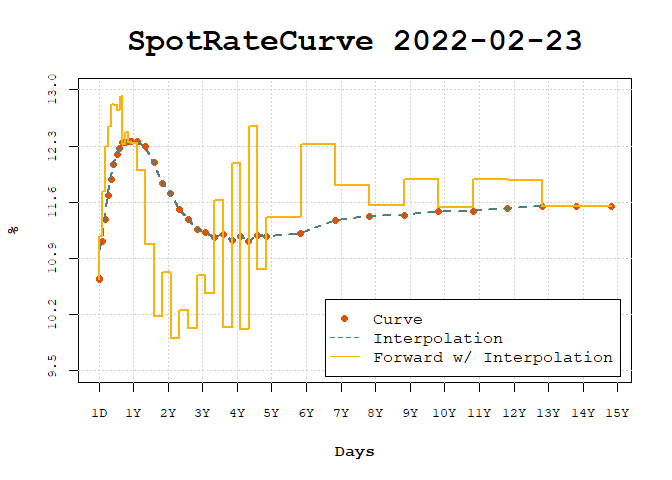

Calculations involving interest rates are usually very easy and straightforward, but sometimes it involves specific issues that makes the task of writing structured and reproducible code for it chalenging and annoying. The fixedincome package brings many functions to strucutre and create facilities to handle with interest rates, term structure of interest rates and specific issues regarding compounding rates and day count rules, for example.
Below there are a few examples on how to create and make calculations with interest rates using fixedincome.
Installation
You can install from CRAN with:
You can install the development version of fixedincome from GitHub with:
Examples
To create an interest rate we need to specify 4 elements:
- the value of the interest rate itself, a decimal number
- the compounding regime of interest rate, that can be
simple,discreteorcontinuous. - the day count rule which defines how interest is accrued over time, we have a few options, for example,
actual/360where the days between two dates are calculated as the difference and the year is assumed to be 360 days. - the calendar used to count the number of days between two dates, we have
actualcalendar that compute the difference between two dates.
There is another important topic that wasn’t declared here that is the frequency of interest. To start with the things simple fixedincome handles only with annual rates since this represents the great majority of rates used in financial market contracts, but this restriction can be reviewed in the future.
Given that let’s declare an annual spot rate with a simple compounding, an actual/360 and the actual calendar.
library(fixedincome)
sr <- spotrate(0.06, "simple", "actual/360", "actual")
sr
#> [1] "0.06 simple actual/360 actual"Compound the spot rate for 7 months.
Also compound using dates.
Spot rates can be put inside data.frames.
library(dplyr)
library(fixedincome)
df <- tibble(
rate = spotrate(rep(10.56 / 100, 5),
compounding = "discrete",
daycount = "business/252",
calendar = "Brazil/ANBIMA"
),
terms = term(1:5, "years")
)
df
#> # A tibble: 5 x 2
#> rate terms
#> <SpotRate> <Term>
#> 1 0.1056 discrete business/252 Brazil/ANBIMA 1 year
#> 2 0.1056 discrete business/252 Brazil/ANBIMA 2 years
#> 3 0.1056 discrete business/252 Brazil/ANBIMA 3 years
#> 4 0.1056 discrete business/252 Brazil/ANBIMA 4 years
#> 5 0.1056 discrete business/252 Brazil/ANBIMA 5 yearsThe tidyverse verbs can be easily used with SpotRate and Term classes.
df |> mutate(fact = compound(rate, terms))
#> # A tibble: 5 x 3
#> rate terms fact
#> <SpotRate> <Term> <dbl>
#> 1 0.1056 discrete business/252 Brazil/ANBIMA 1 year 1.11
#> 2 0.1056 discrete business/252 Brazil/ANBIMA 2 years 1.22
#> 3 0.1056 discrete business/252 Brazil/ANBIMA 3 years 1.35
#> 4 0.1056 discrete business/252 Brazil/ANBIMA 4 years 1.49
#> 5 0.1056 discrete business/252 Brazil/ANBIMA 5 years 1.65Spot rate curves
Let’s create a spot rate curve using web scraping (from B3 website)
source("examples/utils-functions.R")
curve <- get_curve_from_web("2022-02-23")
curve
#> SpotRateCurve
#> 1 day 0.1065
#> 3 days 0.1064
#> 25 days 0.1111
#> 44 days 0.1138
#> 66 days 0.1168
#> 87 days 0.1189
#> 108 days 0.1207
#> 131 days 0.1220
#> 152 days 0.1227
#> 172 days 0.1235
#> # ... with 29 more rows
#> discrete business/252 Brazil/ANBIMA
#> Reference date: 2022-02-23SpotRateCurve plots can be easily done by calling plot.
For another date.

It can show the forward rates for the short term by selecting the first two years.
curve <- get_curve_from_web("2022-02-23")
plot(fixedincome::first(curve, "2 years"), show_forward = TRUE)Once interpolation is set, it can be used in the plot.
interpolation(curve) <- interp_flatforward()
plot(
fixedincome::first(curve, "2 years"),
use_interpolation = TRUE, legend_location = "bottomright"
)
Parametric models like the Nelson-Siegel-Svensson model can be fitted to the curve.
interpolation(curve) <- fit_interpolation(
interp_nelsonsiegelsvensson(0.01, 0.01, 0.01, 0.01, 0.01, 0.01), curve
)
interpolation(curve)
#> <Interpolation: nelsonsiegelsvensson >
#> Parameters:
#> beta1 beta2 beta3 beta4 lambda1 lambda2
#> 0.09283 0.01325 0.04613 0.05007 0.00022 0.01092Once set to the curve it is used in the plot to show daily forward rates.
The interpolation can be changed in order to compare different interpolations and the effects in forward rates.
interpolation(curve) <- interp_flatforward()
plot(
curve,
use_interpolation = TRUE, show_forward = TRUE,
legend_location = "bottomright"
)
Interpolation enables the creation of standardized curves, commonly used in risk management to build risk factors.
risk_terms <- c(1, c(3, 6, 9) * 21, c(1, 5, 10) * 252)
risk_curve <- curve[[risk_terms]]
plot(risk_curve, use_interpolation = TRUE)